CSS
CSS es un lenguaje de diseño gráfico que se utiliza para definir la apariencia de los sitios web. Permite controlar el color, la fuente, la posición, las animaciones y los efectos visuales de los elementos de una página web.

CSS es un lenguaje de diseño gráfico que se utiliza para definir la apariencia de los sitios web. Permite controlar el color, la fuente, la posición, las animaciones y los efectos visuales de los elementos de una página web.
JavaScript es un lenguaje de programación de alto nivel, interpretado y orientado a objetos, ampliamente utilizado para crear páginas web interactivas y dinámicas, así como aplicaciones web y de escritorio.

| Nombre del Atributo | Descripción | Valores Posibles | Ejemplo | Imagen | Fuente De Informacion |
|---|---|---|---|---|---|
| font-size | especifica la dimensión de la letra. Este tamaño puede, a su vez, alterar el aspecto de alguna otra cosa, ya que se usa para calcular la longitud de las unidades | xx-small, x-small, small, medium, large, x-large, xx-large | fron-size <longitud> <porcentaje> | 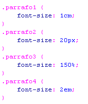 | Enlace |
| border-radius | redondea las esquinas del borde exterior de un elemento. Puedes establecer un único radio para crear esquinas circulares o dos radios para crear esquinas elípticas. | radio,esquina_superior-izquierda-y-esquina-inferior-derecha | border-radius: 10px; | 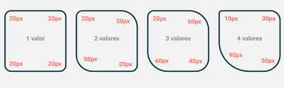 | Enlace |
| display | Define como se muestra un ejemplo en la pagina | block,inline,flex,grid,etc | display: flex; | 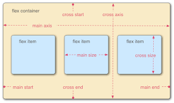 | Enlace |
| flexbox (display:flex) | Activa el modelo de caja flexible para distribuir elementos de un contenedor | flex,inline-flex | display:flex; justify-content:center; | 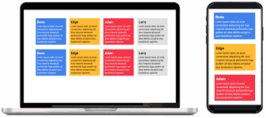 | Enlace |
| position | Especifica la posición de un elemento en el documento | static,relative,absolute,fixes,sticky | <position>=[left|center|right|top|bottom|<length-percentage>]| | 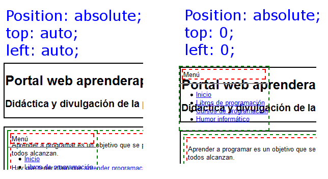 | Enlace |
| box-shadow | Agrega sobra a un elemento para mejorar su apariencia visual | none,offset-x,offset-y,blur-radius | div{box-shadow:10px10px;} | 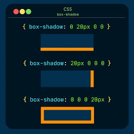 | Enlace |
| overflow | controla como se maneja el contenido que excede el tamaño de su contenedor | visible,hidden,scroll,auto | overflow: visible, overflow: hidden, overflow: scroll, overflow: auto, overflow: inherit | 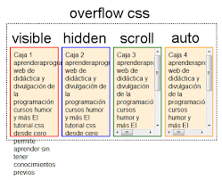 | Enlace |
| z-index | controla la superposicioon de elementos en el eje Z | Valores numericos(positivos o negativos) | z-index:auto|<entero>|inherit |  |
Enlace |
| opacity | Ajusta la transparencia de un elemento | Valores entre 0 que seria transparente y 1 que es opaco | opacity: 0.5; | 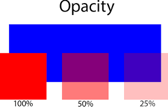 | Enlace |
| margin y padding | margin Define el espacio fuera del borde de un elemento mientras que paddig define el espacio dentro del borde | valores en px,%,auto,etc | margin:20px,padding:10px; | 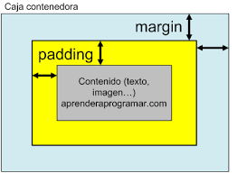 | margin |
| border-radius | Redondea las esquinas de un elemento. | Valores en px,%(Ej:10px,50%) | border-radius:10px; | 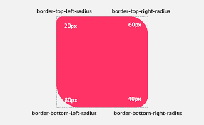 | Enlace |
| text-align | Controla la alineación del texto dentro de un elemento. | left,right,center,justify | text-alling:center; | 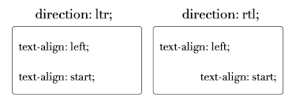 | Enlace |
| background-image | permite establecer una imagen como fondo de un elemento | url("imagen.png),linear-gradient(),none | background-image:url("fondo.jpg") | 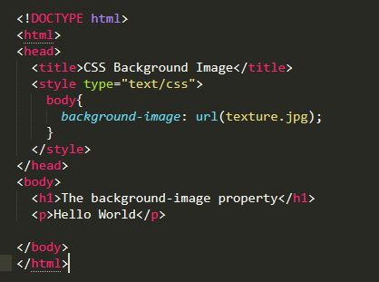 | Enlace |
| cursor | define el tipo de curso que se mostrara al pasar sobre un elemento | default,pointer,text,move,etc | cursor: pointer; | 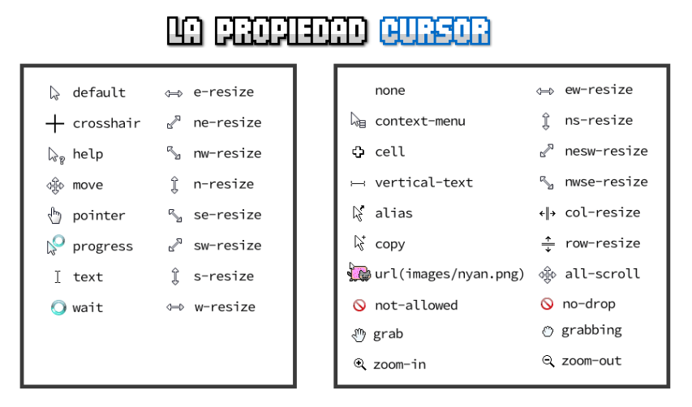 | Enlace |